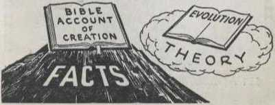

If evolution,
Can you prove it is true?
If the Bible,
Is your faith founded on facts?
Evolutionists refuse to believe the Bible account of how an infinitely-wise and all-powerful Creator built this planet and furnished it with every sort of plant and animal life. So they invent theories of their own to explain the origin of life. At one time they taught that fleas, worms, mice and low forms of life sprang up spontaneously from Inanimate matter. The invention of the microscope and the work of Pasteur, however, exploded this spontaneous generation idea. Not particularly worried, however, over the fact that they have absolutely no explanation for the origin of life, evolutionists are content to dote on simple theories about one-celled life in a mud puddle evolving to the stature of a man.
Several of their theories had to be abandoned In the face of advancing knowledge. Then somebody set forth the acquired characteristics theory, claiming that environment caused certain minute changes to occur in size, shape and color, which traits were passed on and developed by the succeeding generation until after millions of years new families appeared. But modem genetics has proved all this false, as acquired characteristics are not inheritable. Darwin called It "nonsense”!
What next? Darwinism! That Is, the belief that in the struggle for existence natural selection ot needed and useful variations is made, while those variations that prove useless and weak perish. In other words, 'survival of the strongest and fittest.’ Well, how could an eye, or ear, or heart develop according to this theory, since it would be useless until fully developed? Or how could a mother’s breasts, useless until complete, persist in developing through thousands of years? Little wonder evolutionists themselves now cast off this folly of Darwin.
Science's latest theory: sudden changes, called mutations, are believed to explain the riddle of evolution. But alas! this theory also falls down when tested with scientific facts. Small changes due to mutation find no support in the fossil records as producing new families, and big changes always result In freaks. It is a proved fact: mutations are more harmful than helpful!
Lay aside your preconceived Ideas and prejudices and consider this question. Does evolution or the Bible give the most scientific explanation of the wonders of creation? Let us compare.
The theory of evolution claims that life began with a single cell and took millions of years to develop Into complex forms. But the facts of geology reveal that very complex forms of fife appeared suddenly, leaving an unaccountable bllllon-year void at the very beginning of the evolutionary chain. Moreover, the earliest findings show animal life in the same great variety of families as we have today. Now the Bible agrees with the scientific facts, not with the unexplainable theories, declaring: “And God said. Let the waters swarm with swarms of living creatures, and let birds fly above the earth . . . And God said. Let the earth bring forth living creatures after their kind, cattle, and creeping
things, and beasts at the earth after their kind: and it was so.”—Genesis 1:20. 24.
Evolution claims that man gradually evolved or climbed upward from the level of some primitive ape, but ancient archaeological findings show that civilization at the very beginning was on a high level. The Bible agrees with the facts. It says original man was perfect, that he has since descended, fallen, degenerated. If the evolution theory is correct, man's life span should now be at Its longest, but archaeologists have proved that the longevity of the ancients was much greater. Again the Bible sides with the facts and says that In preFlood days men lived many hundreds of years.
Evolution teaches that man's language developed from animal grunts and growls. The facts show that the oldest languages were the most complex, the most primitive languages the hardest to learn, that modern speech has degenerated into less complex forms. The Bible holds to the facts, and says that the first man was so perfect in his command of language, and in his ability to coin new words, that he gave all the birds and beasts their names. Can you name more than a tenth?—Genesis 2:19, 20.
The human mind is another unexplainable mystery for evolutionists. There Is a great gulf between the smartest animals and man. for man has mental powers and capacities far above lower animals. Man Is able to accumulate knowledge from previous generations and build upon It. Not so animals. They are as primitive as their ancestors. The wisdom of animals, sometimes great, is not directed by Its possessor, but is a hereditary Instinct.
Whereas evolution Is at a loss to explain this tremendous chasm that separates men and animals on the mental level, the Bible does explain It. for God said: "Let us make man In our Image, after our likeness: and let them have dominion over the fish of the sea. and over the birds of the
heavens, and over the cattle, and over all the earth, and over every creeping thing." (Genesis 1:26, 27) Not In the likeness of any animal, but made In the
Image and likeness of God; that explains why mankind has tremendous powers of perception and the ability to reason, weigh arguments, use logic, and decide between right and wrong. Only man has a
conscience to direct him. Only man can display unselfish love, sympathy, mercy and justice. Only man has the Impulse to worship the divine Being.
At every point of comparison the Bible proves to be true. Science confirms the exact order of creation as set forth in the first chapter of Genesis. Not a possibility of its being guesswork! Science says that all races came from a single human pair. Well, the Bible said that more than three thousand years ago! (Genesis 1:27, 28; Acts 17:26) Science knows that cats and dogs, birds and rabbits, cattle and pigs cannot be interchangeably bred. But the Bible knew It first and says each family Is made "after Its kind”.
Aslde from this overwhelming evidence even greater proof of the Bible’s accuracy dependability. Just think of it, 566 years before Jesus as Messiah came, the very year of his appearance was foretold. The physical facts concerning the life of Jesus, foretold long centuries before their occurrence, also give powerful proof of Bible authenticity. You question this? Yet it was impossible for Jesus to maneuver the events in his life to fulfill all the prophecies. And what about the fulfillment of Bible prophecy since 1914? Surely no one will say that believers in the Bible maneuvered events to bring about World Wars I and II, and the global food shortages, pestilences, diseases, earthquakes, and the crime, moral delinquency and general wickedness and woe that have come in concentrated doses since 1914. Investigate, and you will find the Bible nearly 2.000 years ago foretold that these terrible things would plague this present generation, starting A.D. 1914. Their reality inspires faith in the Bible.
there is and de-
If what is here said appears dogmatic, without the backing of sufficient proof, it Is because of limited space. Detailed and conclusive proof is set forth in the publications recommended below.
Scriptures quoted herein are from the “American Standard Version" for the Hebrew Scriptures or the "New World Translation of the Christian Greek Scriptures"
“MAKE SURE OF ALL THINGS"
Are you sure of what you believe? The Bible study aid "Make Sure of All Things” enables Bible lovers to be just that. It contains a brief summary followed by comprehensive Scripture quotations tor 70 outstanding religious themes Bound in brown cloth, 416 pages. It is available on a contribution of 75 cents.
Evolution versus The New World Is a 64-page treatise proving the Bible scientific and the evolution theory an ancient superstition. Yours on a contribution of five cents.
Printed In U.S.A.
6
T12